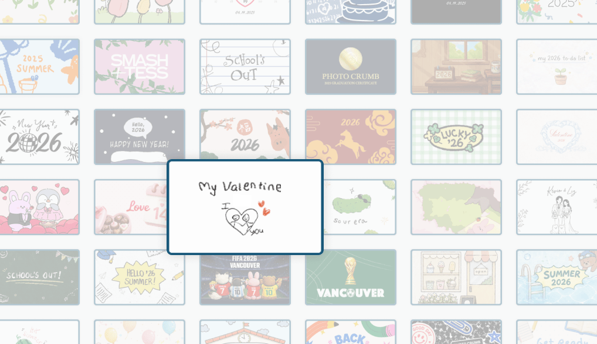
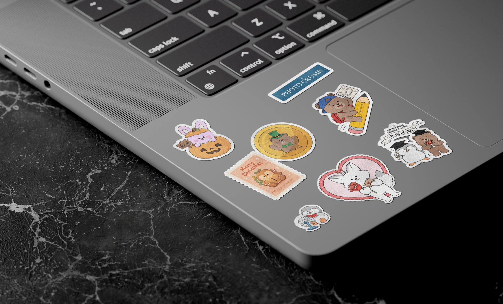
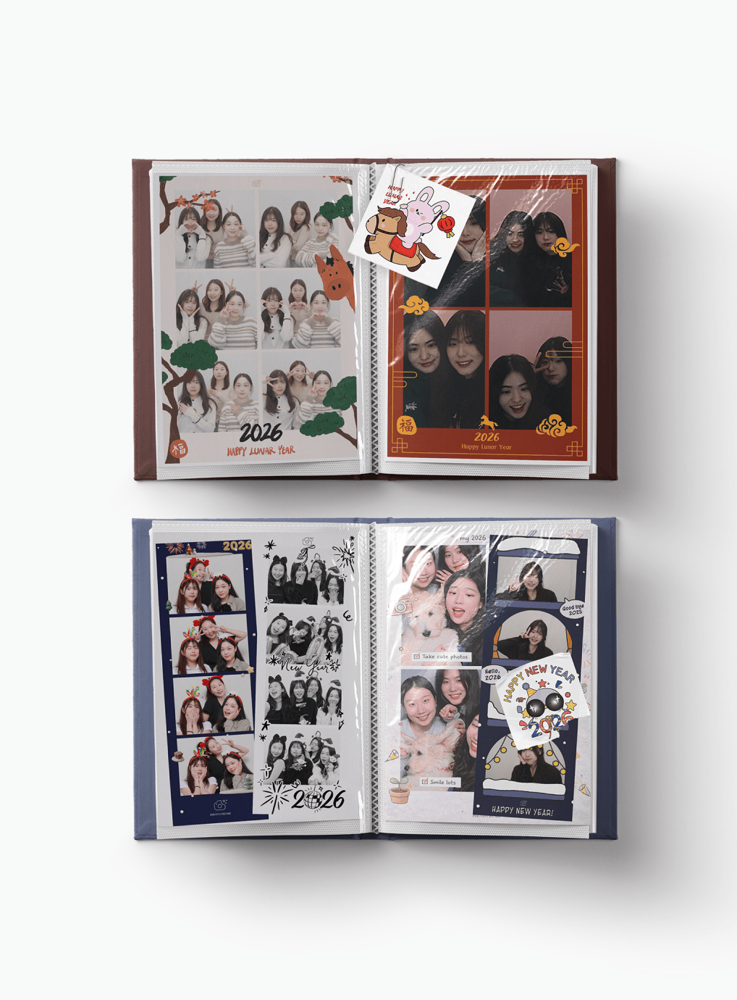
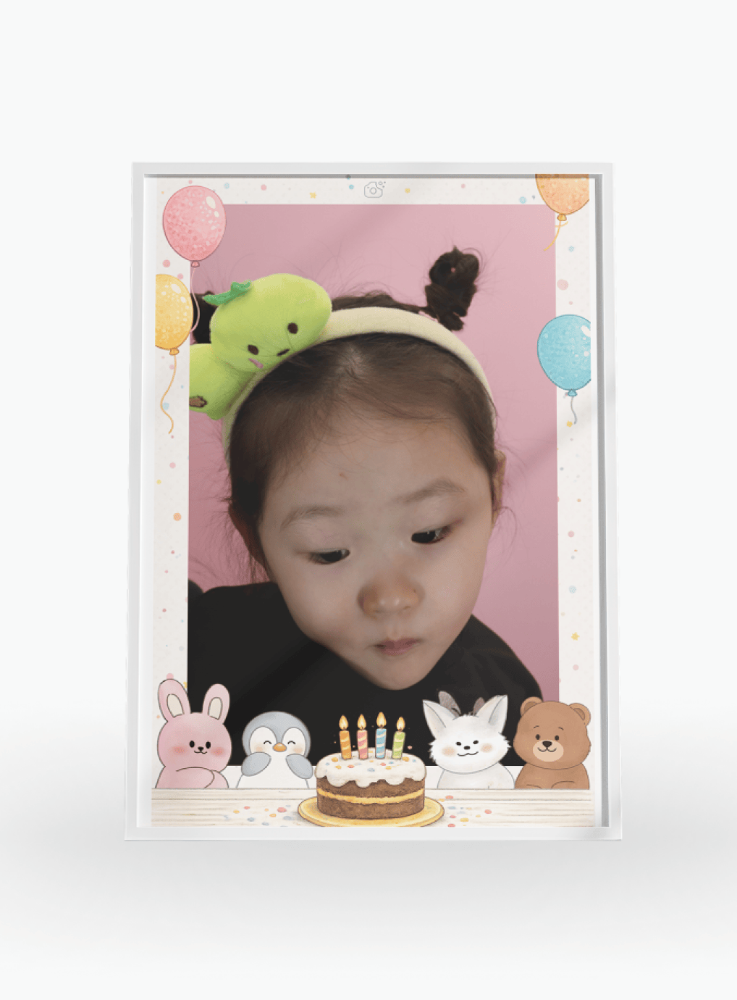
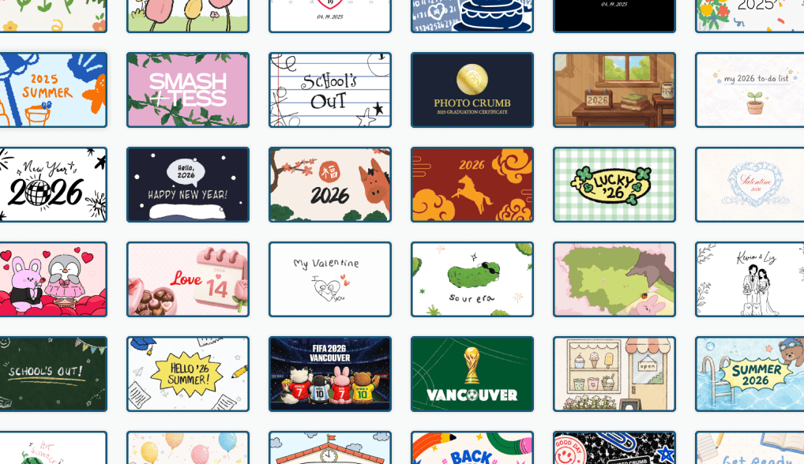
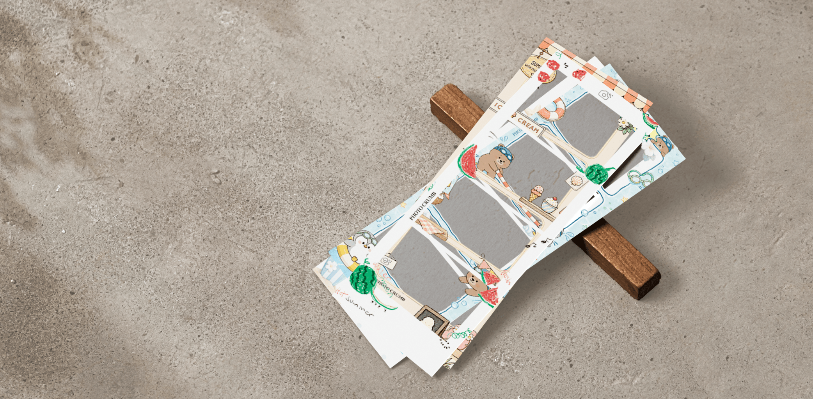
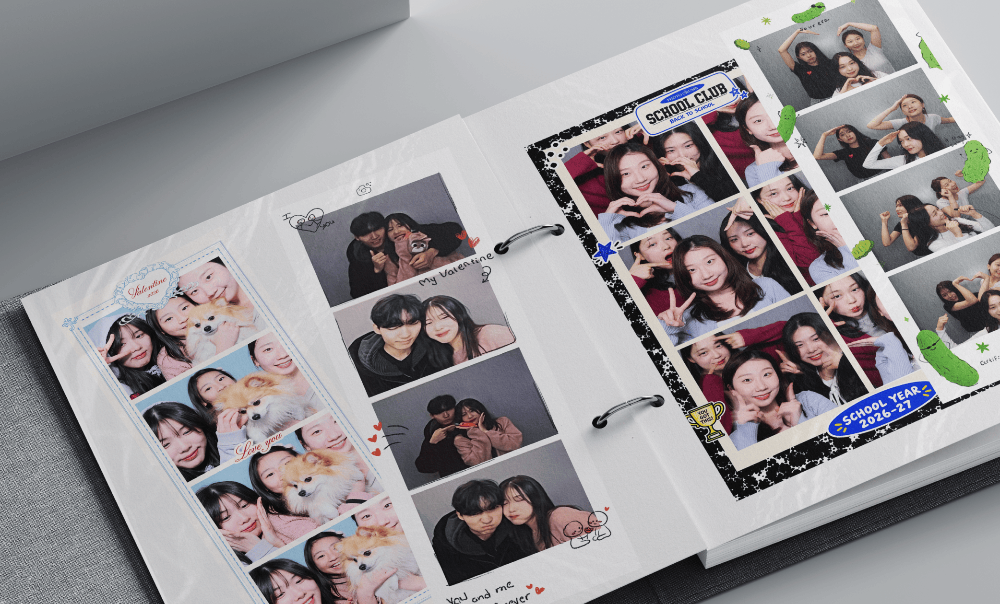

Photocrumb
Making new memories, season after season.
Photocrumb is a self-serve photo booth studio focused on playful, customizable photo experiences. Since 2025, I’ve worked across UI and visual design, creating seasonal frames, stickers, and in-booth interface elements. I also designed a new mini frame format for a more portable keepsake, planned for release. Across each design, my goal is to keep the experience feeling fresh while still feeling like Photocrumb.
One of my designs generated the most revenue among Photocrumb’s frame options that day, with 1,000+ uses.





